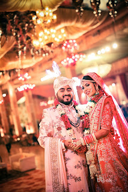
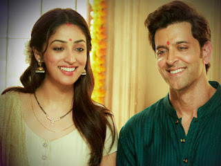

BEING BLIND, THE HUSBAND LIVED HAPPILY WITH HIS WIFE FOR MANY YEARS, KNOWING THE REASON, YOU TOO WILL NOT BE ABLE TO STOP YOUR TEARS.
It is said that love should not be done by looking at beauty but with a true heart, because the beauty of the face fades with time, but a person with a true heart and a clean mind always makes the life of his partner. Heaven by your good conduct and hence it is said that for love it is not a good present but a good attitude matters and the person who gets a true heart person as his life partner, that person is the part of this world. You are the luckiest person and today we will give you such a true heart.We are going to tell about such a love story, after knowing which your eyes will become moist and you will also understand the real definition of true love, so let's know about this beautiful love story.
The story we are going to tell you is the love story of a farmer's daughter and a boy from a rich house, in which the boy's name is Shivam, a boy from a prosperous family in Bangalore and once Shivam had a girl in sight. But it falls, which was very beautiful and simple in appearance, and upon seeing it Shivam falls in love with the fruit itself and when Shivam comes to know about the girl, he comes to know that she is a farmer. And one day Shivam himself went to that girl and expressed his love, but the girl flatly refused him.
After which Shivam did not give up and he himself went to the girl's house to ask her father for her hand and the father of the same girl also saw that the boy is from a rich family and he also loves his daughter very much and because of this She said yes to this relationship and both of them got married with pomp.

After the same marriage Shivam started living very happily with his wife and some years passed and then once Shivam's wife got skin disease and Shivam got her a lot of treatment but she could not get well and gradually the girl's The beauty also started diminishing and it started. She became very ill and with this she worried the most that if she became unattractive then her husband would not leave her as he felt that Shivam had taken away her beauty.I had fallen in love with him, who was slowly fading away and due to this concern Shivam's wife started falling ill.
At the same time, Shivam had an accident while coming home from office and in this accident Shivam's eyesight was also lost and when Shivam's wife came to know about all this, she was very sad and was engaged in the service of her husband. And now the fear was also removed from her mind that if her husband would see her ugly face then she would leave him and now both started living happily with each other but after some time Shivam's wife's health became very much.It got worse and after some time he said goodbye to this world and after his departure Shivam was completely broken and he started leaving his house.

When he was leaving the house, a person living in his neighborhood asked him that brother, your wife is no longer in this world and you are blind, so where will you go, who will take care of you and then what did Shivam say? . Tears welled up in the eyes of the knowledgeable neighbor. Shivam told that I was never blind but I only pretended to be blind so that the fear of Peri wife gets out of his mind that I will not leave her because of her ugly face and she spends her life happily with me without anyone Can you.Hesitation, but today he is not with me and I will spend my life with the help of his memories. In this way Shivam proved that true love is done from the true heart. No one else has as much power in color and beauty and in true love.
Translation :-
कहते हैं प्यार खूबसूरती को देखकर नहीं बल्कि सच्चे दिल वाले से करना चाहिए, क्योंकि चेहरे की खूबसूरती समय के साथ फीकी पड़ जाती है, लेकिन सच्चे दिल और साफ दिमाग वाला इंसान हमेशा अपने साथी की जिंदगी बनाता है। अपने अच्छे आचरण से स्वर्ग और इसलिए यह कहा जाता है कि प्यार के लिए यह एक अच्छी उपस्थिति नहीं है बल्कि एक अच्छा रवैया मायने रखता है और जिस व्यक्ति को अपने जीवन साथी के रूप में सच्चा दिल वाला व्यक्ति मिलता है, वह व्यक्ति इस दुनिया का सबसे भाग्यशाली व्यक्ति है और आज हम आपको ऐसा सच्चा दिल देंगे। हम एक ऐसी प्रेम कहानी के बारे में बताने जा रहे हैं, जिसे जानने के बाद आपकी आंखें नम हो जाएंगी और आपको सच्चे प्यार की असली परिभाषा भी समझ में आ जाएगी, तो आइए जानते हैं इस खूबसूरत प्रेम कहानी के बारे में।
जो कहानी हम आपको बताने जा रहे हैं वह एक किसान की बेटी और एक अमीर घर के लड़के की प्रेम कहानी है, जिसमें लड़के का नाम शिवम है, जो बैंगलोर के एक समृद्ध परिवार का लड़का है और एक बार शिवम की नजर एक लड़की थी। लेकिन यह गिरता है, जो दिखने में बहुत ही सुंदर और सरल था, और उसे देखते ही शिवम को फल में ही उससे प्यार हो गया और जब शिवम को उस लड़की के बारे में जानकारी मिली, तो उसे पता चला कि वह एक किसान है। और एक दिन शिवम खुद उस लड़की के पास गया और अपने प्यार का इजहार किया, लेकिन लड़की ने उसे साफ मना कर दिया। जिसके बाद शिवम ने हार नहीं मानी और वह खुद उसके पिता से उसका हाथ मांगने के लिए लड़की के घर गया और उसी लड़की के पिता ने भी देखा कि लड़का एक अमीर परिवार से है और वह भी अपनी बेटी से बहुत प्यार करता है और इस वजह से वह इस रिश्ते के लिए हां कह दी और दोनों ने धूमधाम से शादी कर ली।
उसी शादी के बाद शिवम अपनी पत्नी के साथ बहुत खुशी से रहने लगा और कुछ साल बीत गए और फिर एक बार शिवम की पत्नी को चर्म रोग हो गया और शिवम ने उसका बहुत इलाज करवाया लेकिन वह ठीक नहीं हो सका और धीरे-धीरे लड़की की सुंदरता भी कम होने लगी और वह शुरू हो गई। वह बहुत बीमार हो गई और इसी के साथ उसे सबसे ज्यादा चिंता होने लगी कि अगर वह बदसूरत हो गई तो उसका पति उसे नहीं छोड़े क्योंकि उसे लगा कि शिवम ने उसकी सुंदरता ले ली है। मुझे उससे प्यार हो गया था, जो धीरे-धीरे दूर होता जा रहा था और इसी चिंता में शिवम की पत्नी बीमार होने लगी।
उसी बार ऑफिस से घर आते समय शिवम का एक्सीडेंट हो गया था और इस हादसे में शिवम की आंखों की रोशनी भी चली गई थी और जब शिवम की पत्नी को यह सब पता चला तो वह बहुत दुखी हुई और अपने पति की सेवा में लगी रही. और अब उसके मन से यह डर भी दूर हो गया था कि अगर उसका पति उसका बदसूरत चेहरा देखेगा तो वह उसे छोड़ देगी और अब दोनों एक-दूसरे के साथ खुशी-खुशी रहने लगे लेकिन कुछ समय बाद शिवम की पत्नी की तबीयत बहुत ज्यादा हो गई। यह बिगड़ गया और कुछ समय बाद उसने इस दुनिया को अलविदा कह दिया और उसके जाने के बाद शिवम पूरी तरह से टूट गया और वह अपना घर छोड़ने लगा।
जब वह घर से निकल रहा था, तो उसके पड़ोस में रहने वाले एक व्यक्ति ने उससे पूछा कि भाई, तुम्हारी पत्नी अब इस दुनिया में नहीं है और तुम अंधे हो, तो तुम कहाँ जाओगे, तुम्हारी देखभाल कौन करेगा और फिर शिवम ने क्या कहा। जानकार पड़ोसी की आंखों में आंसू आ गए। शिवम ने बताया कि मैं कभी अंधा नहीं था, लेकिन मैंने केवल अंधे होने का नाटक किया ताकि पेरी पत्नी का डर उसके दिमाग से निकल जाए कि मैं उसे उसके बदसूरत चेहरे के कारण नहीं छोड़ूं और वह बिना किसी के मेरे साथ खुशी से अपना जीवन बिता सके। झिझक, लेकिन आज वो मेरे साथ नहीं है और मैं उनकी यादों के सहारे अपनी जिंदगी बिताऊंगा। इस तरह शिवम ने साबित कर दिया कि सच्चा प्यार सच्चे दिल से किया जाता है। रंग और सुंदरता में और सच्चे प्यार में जितनी ताकत किसी और के पास नहीं है।